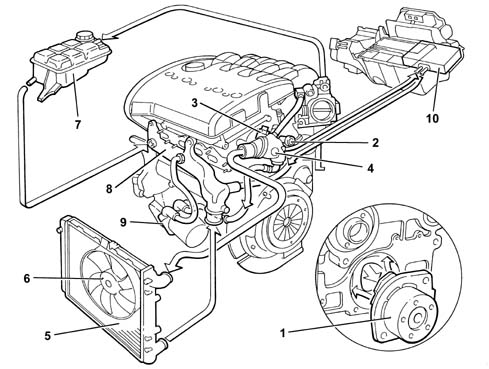
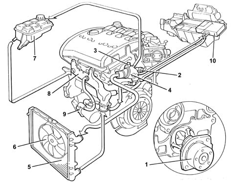
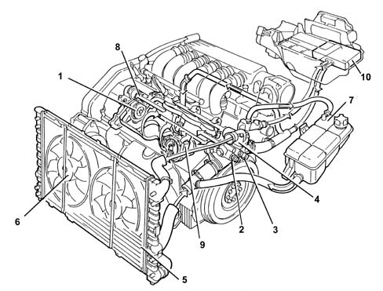
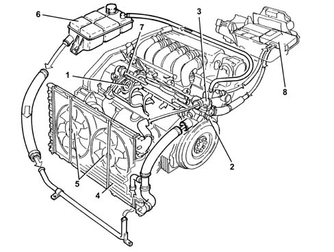
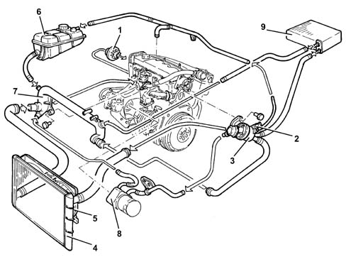
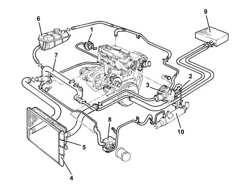
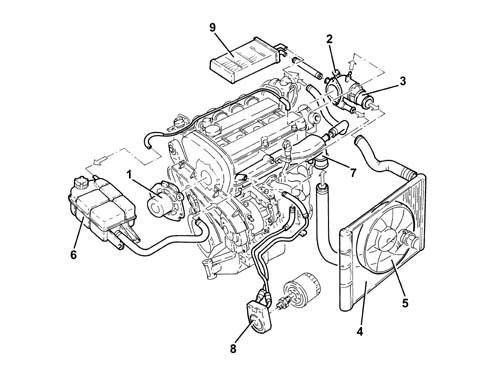
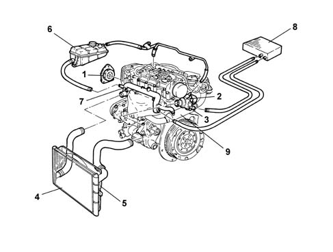
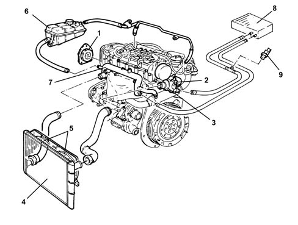

Introduction - ENGINE COOLING
- Path
- Descriptions > 10 ENGINE > 1088 ENGINE COOLING > Introduction - ENGINE COOLING
- Kind
- system description
- Applies to
- engines: 1.6 TS , 1.8 TS, 2.0 JTS, 2.5 V6, 3.2 V6, 1.9 JTD 8v , 1.9 JTD 16v, 2.0 JTS, 2.4 JTD 10v, 2.4 JTD 20v; all production periods
- Interactive page
- https://sloeber94.github.io/elrnDB-a156/en/#/3239199
Applies to: all engines; all production periods
ENGINE COOLING SYSTEM

1, Water pump 2, Combined sender unit for coolant temperature gauge and overheating warning light 3, Coolant temperature sensor ( See subassembly 1056 PETROL INJECTION SYSTEM ) 4, Thermostat 5, Radiator 6, Electric fan 7, Supply reservoir 8, Rigid water inlet pipe to pump 9, Water-oil exchanger 10, Heater unit
Applies to: all engines; all production periods
ENGINE COOLING SYSTEM

1, Water pump 2, Combined sender unit for coolant temperature gauge and overheating warning light (premodification) 3, Coolant temperature sensor ( See subassembly 1056 PETROL INJECTION SYSTEM ) 4, Thermostat 5, Radiator 6, Electric fan 7, Supply reservoir 8, Rigid water inlet pipe to pump 9, Water-oil exchanger 10, Heater unit
Applies to: engines: 2.5 V6; all production periods
ENGINE COOLING SYSTEM

1, Water pump 2, Combined sender unit for coolant temperature gauge and overheating warning light (only premodification version) 3, Coolant temperature sensor ( See subassembly 1056 PETROL INJECTION SYSTEM ) 4, Thermostat 5, Radiator 6, Electric fans 7, Supply reservoir 8, Rigid water inlet pipe to pump 9, Water-oil exchanger 10, Heater unit
Applies to: engines: 3.2 V6; all production periods
OPERATION
ENGINE COOLING SYSTEM

1 - Water pump 2 - Engine coolant temperature sensor Characteristic of working principle 1056 PETROL INJECTION SYSTEM 3 - Thermostat 4 - Radiator 5 - Electric fans 6 - Reservoir 7 - Water pump rigid inlet pipe 8 - Heater unit
Applies to: engines: 1.9 JTD 8v , 2.4 JTD 10v; all production periods
ENGINE COOLING SYSTEM

1 - Water pump 2 - Engine coolant temperature sensor Characteristic of working principle 1060G pressure pump electric control 3 - Thermostat 4 - Radiator 5 - Electric fans 6 - Reservoir 7 - Water pump rigid inlet pipe 8 - Water/oil heat exchanger 9 - Heater unit
Applies to: engines: 1.9 JTD 8v , 2.4 JTD 10v; all production periods; only with equipment: Euro 3
ENGINE COOLING SYSTEM
-

1 - Water pump 2 - Engine coolant temperature sensor Characteristic of working principle 1060G pressure pump electric control . 3 - Thermostat 4 - Radiator 5 - Electric fans 6 - Reservoir 7 - Rigid coolant pump intake pipe 8 - Engine oil heat exchanger 9 - Climate control system heater 10 - E.G.R. exhaust gas heat exchanger Characteristic of working principle 1080C exhaust gas recirculation system (e.g.r.) .
Applies to: engines: 2.0 JTS, 2.0 JTS; all production periods
CONSTRUCTION FEATURES
COOLING SYSTEM

1 - Water pump 2 - Engine coolant temperature sensor Characteristic of working principle 1056F DIRECT PETROL INJECTION SYSTEM 3 - Thermostat 4 - Radiator 5 - Electric fan 6 - Reservoir 7 - Rigid coolant pump intake pipe 8 - Engine oil heat exchanger 9 - Climate control system heater
Applies to: engines: 1.9 JTD 16v; all production periods
CONSTRUCTION FEATURES
COOLING SYSTEM

1 - Water pump 2 - Engine coolant temperature sensor Characteristic of working principle 1060G pressure pump electric control 3 - Thermostat 4 - Radiator 5 - Electric fan 6 - Reservoir 7 - Rigid coolant pump intake pipe 8 - Climate control system heater 9 - E.G.R. exhaust gas heat exchanger Characteristic of working principle 1080C exhaust gas recirculation system (e.g.r.)
Applies to: engines: 2.4 JTD 20v; all production periods
COMPOSITION
STRUCTURE
The engine cooling system is represented below.

1. Water pump 2. Engine coolant temperature sensor Characteristic of working principle 1060G pressure pump electric control 3. Thermostat 4. Radiator 5. Electric fans 6. Fuel tank 7. Water pump rigid coolant inlet pipe 8. Heater unit 9. Coolant temperature sensor to heater